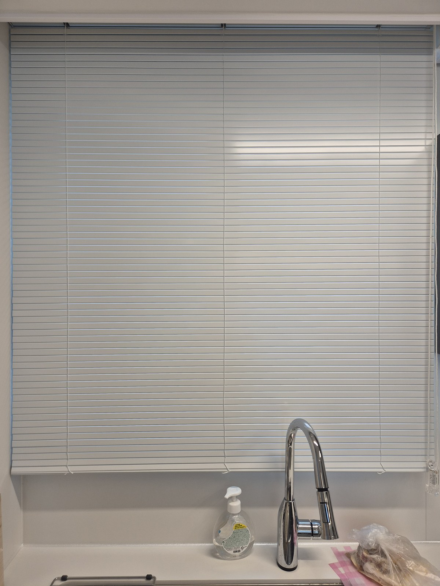

2026년 7월 23일 시공
포항 자이애서턴 집 전체 창 시공후기
거실은 쉬폰, 안방은 암막, 알파룸은 블랙 롤스크린

포항 자이애서턴 집 전체 창 시공 기록입니다.
거실부터 주방까지 여섯 공간을 한 번에 맡은 현장인데, 결과적으로 제품이 다섯 가지로 갈렸습니다.
집 한 채를 통째로 맡으면 가장 먼저 하는 일이 창을 세는 게 아니라 방마다 무엇을 하는 방인지 듣는 것입니다. 그 이야기를 듣고 나면 어떤 창에 무엇을 달아야 하는지가 거의 정해집니다.
안녕하세요, 포항을 포함한 경북 전 지역 커튼·블라인드 출장 시공 따솜커튼블라인드입니다.
거실 — 쉬폰 두배나비주름 한 겹
거실 창이 이 집에서 제일 큽니다.
이런 창에 처음부터 두꺼운 원단을 걸면 낮에 거실이 확 가라앉습니다. 자이애서턴처럼 채광이 좋은 집은, 그 좋은 빛을 스스로 막아버리는 셈이 됩니다.
그래서 거실은 화이트 쉬폰 두배나비주름 한 겹으로 갔습니다.
쉬폰은 빛을 막는 원단이 아니라 번지게 하는 원단입니다. 창으로 들어오던 직사광이 원단을 통과하면서 부드럽게 퍼져서, 거실은 여전히 밝은데 눈부심과 바깥 시선만 걸러집니다.
두배나비주름은 창 폭의 두 배가 넘는 원단을 잡아 주름을 만드는 방식이라 세로 결이 촘촘하고 규칙적으로 떨어집니다. 넓은 벽면일수록 이 결이 있고 없고의 차이가 큽니다.
안방 — 쉬폰 속커튼 + 100프로 암막커튼

안방은 거실과 정반대입니다.
침실에 필요한 건 밝기가 아니라 어둠이니까요. 그래서 안방만 두 겹으로 잡았습니다. 창 쪽에 100프로 암막커튼, 실내 쪽에 쉬폰 두배나비주름 속커튼.
낮에는 속커튼만 쳐서 은은하게 쓰시고, 주무실 때만 뒤의 암막을 닫으시면 됩니다. 한 창에서 낮과 밤을 나눠 쓰는 구조입니다.
겉커튼 색은 백아이보리로 골랐습니다. 순백은 벽에 묻혀 커튼이 없는 것처럼 밋밋해지고, 진한 색은 침실을 좁아 보이게 합니다. 그 사이를 잡아주는 색이 백아이보리입니다.
밝은 색인데 암막이 되냐는 질문을 정말 많이 받는데, 차광은 원단 뒷면의 차광층이 담당합니다. 겉면 색과 빛 차단 성능은 별개입니다.
사진에서 커튼을 양옆으로 묶어둔 모습이 낮의 기본 상태입니다. 이렇게 두면 창이 시원하게 열립니다.
입구방·중간방 — 미색 콤비블라인드

방 두 곳은 콤비블라인드로 갔습니다.
콤비블라인드는 원단에 불투명 띠와 시스루 띠가 번갈아 들어간 구조라, 띠를 어긋나게 맞추면 가려지고 겹치면 열립니다. 채광과 시선 차단을 한 제품에서 단계로 조절할 수 있습니다.
방은 거실만큼 큰 빛이 필요하지도 않고, 침실만큼 완전한 어둠이 필요하지도 않습니다. 그 중간을 가장 편하게 잡아주는 게 콤비블라인드입니다. 부피가 없어서 창가에 책상이나 옷장을 붙이기에도 좋습니다.
색은 미색으로 했습니다. 화이트보다 조금 따뜻해서 방 벽지와 자연스럽게 붙고, 순백처럼 때가 도드라지지도 않습니다.
알파룸(컴퓨터방) — 블랙 암막롤스크린

이 집에서 색이 유일하게 튀는 방입니다.
알파룸을 컴퓨터방으로 쓰시는데 요청이 아주 명확했습니다. 모니터에 창이 비치는 걸 없애고 싶다는 것이었습니다.
모니터 반사는 밝기 문제가 아니라 빛의 색과 방향 문제입니다. 창을 밝은 원단으로 가리면 그 원단 자체가 커다란 조명판이 되어 화면에 하얗게 비칩니다. 흰 롤스크린을 내렸는데도 화면이 뿌옇게 보이는 이유가 이것입니다.
그래서 이 방만 블랙 암막롤스크린으로 갔습니다. 어두운 원단은 빛을 되쏘지 않고 흡수해서, 내려두면 화면 뒤가 검은 벽처럼 정리됩니다. 글자 대비가 살아나서 눈이 훨씬 덜 피로합니다.
책장 옆 창이라 커튼처럼 부피가 나오면 답답한데, 롤스크린은 창면에 얇게 붙어 가구와 부딪히지 않는 점도 이 방에 맞았습니다.
주방 — 화이트 알루미늄블라인드

주방은 물, 기름, 열이 있는 공간입니다.
패브릭 커튼은 냄새를 머금고, 물이 튀면 얼룩이 남습니다. 알루미늄블라인드는 젖은 행주로 슬랫을 훑어 닦으면 그만이고 열에도 변형이 없습니다.
슬랫 각도를 눕히면 싱크대 위로 볕을 받고, 세우면 앞 동 시선만 정확히 끊을 수 있습니다. 색은 싱크대와 창틀에 맞춰 화이트로 갔습니다.
시공 정보
지역 : 경북 포항시 (자이애서턴)
공간 : 거실, 안방, 입구방, 중간방, 알파룸(컴퓨터방), 주방
제품 : 쉬폰 두배나비주름(거실·안방 속커튼) / 100프로 암막커튼 백아이보리(안방) / 미색 콤비블라인드(입구방·중간방) / 블랙 암막롤스크린(알파룸) / 화이트 알루미늄블라인드(주방)
시공일 : 2026년 7월 23일
자주 묻는 질문
Q. 집 전체를 같은 제품으로 통일하는 게 낫지 않나요?
색 톤은 통일하시고 제품은 공간에 맞추시는 걸 권합니다. 이번 집도 화이트에서 미색 사이로 톤은 맞추고 제품만 다르게 갔습니다.
Q. 컴퓨터방에 흰 롤스크린을 달았는데도 모니터가 비쳐요.
밝은 원단이 조명판 역할을 해서 그렇습니다. 어두운 색 암막 원단으로 바꾸면 대부분 해결됩니다.
Q. 콤비블라인드는 완전히 어두워지나요?
아닙니다. 띠를 어긋나게 해도 은은하게 빛이 들어옵니다. 완전한 암막이 필요하면 암막커튼이나 암막롤스크린으로 가셔야 합니다.
Q. 주방에 커튼을 달면 안 되나요?
가능은 하지만 관리가 어렵습니다. 물, 기름, 냄새를 생각하면 알루미늄블라인드나 방수 롤스크린을 권합니다.
Q. 신축 입주 전에 미리 시공할 수 있나요?
가능합니다. 입주 청소 후 가구 들어오기 전이 가장 작업이 깔끔합니다.
마무리
집 전체 창을 한 번에 맡기실 때 가장 아까운 건, 방마다 다른 쓰임을 고려하지 않고 한 제품으로 밀어버리는 경우입니다.
거실은 밝게, 안방은 어둡게, 방은 그 중간에서 조절되게, 컴퓨터방은 반사가 없게, 주방은 닦이게. 이번 자이애서턴 집은 그 다섯 가지를 창별로 나눠 잡은 시공이었습니다.
포항에서 커튼, 블라인드 알아보고 계신다면 편하게 문의 주세요.
창 전체가 나오게 찍은 사진 한 장만 주시면 방문 전에 대략적인 견적을 먼저 알려드립니다.
비슷한 시공이 필요하신가요?
창 전체가 나오게 찍은 사진 한 장 주시면 방문 전에 견적을 알려드립니다.
부재 시 문자를 남겨주시면 빠르게 답변드립니다.